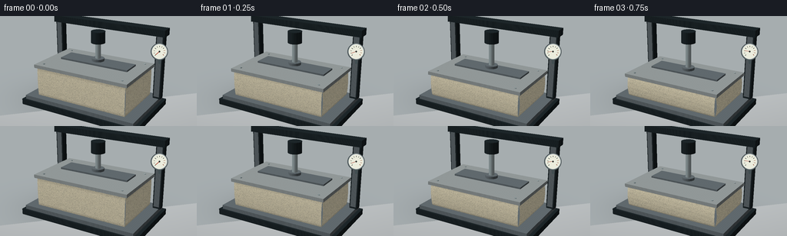
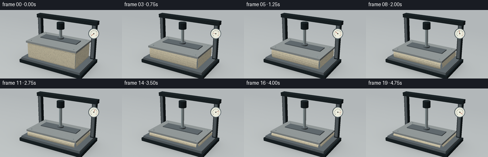
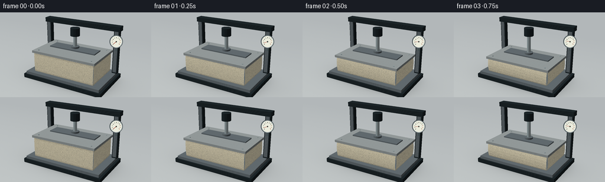
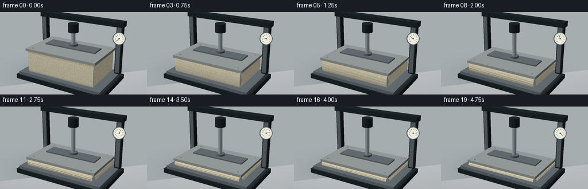

CODING AGENTS AS PIXEL WORLD MODELS
traex/GPT-6.1-Sol · mechanics_0021
点击播放 · 原生 RGB 像素
逐轮保存的候选
回放视频、检查图与代码变化。
每份候选均可单独播放。实际图片检查记录在下方工具轨迹中。
候选 01播放与检查图
点击播放 · 原生 RGB 像素


展开代码变化
--- 上一保存版本
+++ 本次保存版本
@@ -0,0 +1,203 @@
+from pathlib import Path
+import numpy as np
+from PIL import Image, ImageDraw, ImageFilter, ImageFont
+import artifact_io
+
+ROOT=Path(__file__).resolve().parent
+W,H,S=256,144,3
+RW,RH=W*S,H*S
+rng=np.random.default_rng(82)
+# A coherent open-cell foam texture, carried with the material as it deforms.
+tw,th=1200,400
+tex=np.zeros((th,tw,3),dtype=np.float32)
+noise=rng.normal(0,1.9,(th,tw,1))
+tex[:]=[226,216,185]; tex+=noise
+im=Image.fromarray(np.uint8(np.clip(tex,0,255)))
+d=ImageDraw.Draw(im)
+for i in range(20500):
+ x,y=rng.uniform(0,tw),rng.uniform(0,th)
+ r=rng.choice([.5,.8,1.2,1.8,2.4],p=[.2,.35,.3,.12,.03])
+ a=rng.uniform(.65,1.15)
+ c=int(rng.uniform(151,192))
+ d.ellipse((x-r,y-r*a,x+r,y+r*a),fill=(c+13,c+7,c-14))
+ if r>1.3:
+ d.arc((x-r-0.3,y-r*a-.3,x+r+.3,y+r*a+.3),10,160,fill=(241,230,200),width=1)
+foam=np.asarray(im).astype(float)/255
+
+cam=np.array([7.5,-12.8,7.1]); target=np.array([0,0,1.40])
+fwd=(target-cam); fwd/=np.linalg.norm(fwd)
+right=np.cross(fwd,[0,0,1]); right/=np.linalg.norm(right)
+up=np.cross(right,fwd)
+focal=1510.0
+light=np.array([-0.5,-.6,1]); light/=np.linalg.norm(light)
+view=-fwd
+
+def project(points):
+ p=np.asarray(points)-cam
+ z=p@fwd
+ return np.stack([RW*.48+focal*(p@right)/z,RH*.50-focal*(p@up)/z,z],axis=-1)
+
+class Renderer:
+ def __init__(self,bg):
+ self.img=np.asarray(bg).astype(float)/255
+ self.depth=np.full((RH,RW),np.inf)
+ def triangle(self,pts,uvs,mat,normal=None):
+ pts=np.array(pts,float); q=project(pts)
+ if normal is None:
+ n=np.cross(pts[1]-pts[0],pts[2]-pts[0]); n/=np.linalg.norm(n)+1e-10
+ else:n=np.array(normal,float);n/=np.linalg.norm(n)
+ # Back-face culling, keeping all outward-oriented faces only.
+ if np.dot(n,cam-pts.mean(axis=0))<=0:return
+ x0=max(0,int(np.floor(q[:,0].min())));x1=min(RW-1,int(np.ceil(q[:,0].max())))
+ y0=max(0,int(np.floor(q[:,1].min())));y1=min(RH-1,int(np.ceil(q[:,1].max())))
+ if x1<x0 or y1<y0:return
+ yy,xx=np.mgrid[y0:y1+1,x0:x1+1];xx=xx+.5;yy=yy+.5
+ a,b,c=q[:,:2]
+ den=(b[1]-c[1])*(a[0]-c[0])+(c[0]-b[0])*(a[1]-c[1])
+ if abs(den)<1e-8:return
+ u=((b[1]-c[1])*(xx-c[0])+(c[0]-b[0])*(yy-c[1]))/den
+ v=((c[1]-a[1])*(xx-c[0])+(a[0]-c[0])*(yy-c[1]))/den
+ w=1-u-v
+ inv=u/q[0,2]+v/q[1,2]+w/q[2,2];z=1/(inv+1e-20)
+ mask=(u>=-1e-5)&(v>=-1e-5)&(w>=-1e-5)&(z<self.depth[y0:y1+1,x0:x1+1])
+ if not mask.any():return
+ u=u[mask]/q[0,2]/inv[mask];v=v[mask]/q[1,2]/inv[mask];w=w[mask]/q[2,2]/inv[mask]
+ uv=u[:,None]*uvs[0]+v[:,None]*uvs[1]+w[:,None]*uvs[2]
+ pos=u[:,None]*pts[0]+v[:,None]*pts[1]+w[:,None]*pts[2]
+ diff=max(0,np.dot(n,light))
+ half=(light+view);half/=np.linalg.norm(half)
+ spec=max(0,np.dot(n,half))
+ if mat=='foam':
+ tx=(uv[:,0]*tw).astype(int)%tw;ty=np.clip((uv[:,1]*(th-1)).astype(int),0,th-1)
+ color=foam[ty,tx]*(.59+.41*diff)
+ # Darker creases form naturally near both pressure-bearing boundaries.
+ edge=np.minimum(uv[:,1],1-uv[:,1])
+ ao=.86+.14*np.clip(edge/.10,0,1)
+ color*=ao[:,None]
+ elif mat=='foamtop':
+ tx=(uv[:,0]*tw).astype(int)%tw;ty=(uv[:,1]*(th-1)).astype(int)%th
+ color=foam[ty,tx]*(.65+.35*diff)
+ elif mat in ('steel','dark','chrome','plate'):
+ bases={'steel':[.43,.47,.49],'dark':[.13,.17,.185],'chrome':[.62,.68,.69],'plate':[.65,.68,.68]}
+ color=np.tile(np.array(bases[mat])*(.42+.58*diff),(len(uv),1))
+ brush=np.sin(pos[:,0]*530+pos[:,1]*17)*.006+np.sin(pos[:,0]*83)*.004
+ color+=brush[:,None]
+ color+=spec**(70 if mat=='chrome' else 30)*(.60 if mat=='chrome' else .16)
+ if mat=='chrome':
+ color+=(.055*np.sin(pos[:,0]*6+pos[:,1]*4))[:,None]
+ elif mat=='floor':
+ color=np.tile(np.array([.69,.72,.73])*(.74+.26*diff),(len(uv),1))
+ shadow=np.exp(-((pos[:,0]/3.4)**2+(pos[:,1]/2.35)**2)*1.5)
+ color*=1-.21*shadow[:,None]
+ else:
+ color=np.tile(np.array(mat)*(.55+.45*diff),(len(uv),1))
+ self.img[y0:y1+1,x0:x1+1][mask]=np.clip(color,0,1)
+ self.depth[y0:y1+1,x0:x1+1][mask]=z[mask]
+ def quad(self,pts,mat,uv=None):
+ if uv is None:uv=np.array([[0,0],[1,0],[1,1],[0,1]],float)
+ else:uv=np.array(uv,float)
+ self.triangle([pts[i] for i in [0,1,2]],uv[[0,1,2]],mat)
+ self.triangle([pts[i] for i in [0,2,3]],uv[[0,2,3]],mat)
+ def box(self,x0,x1,y0,y1,z0,z1,mat):
+ self.quad([(x0,y0,z1),(x1,y0,z1),(x1,y1,z1),(x0,y1,z1)],mat)
+ self.quad([(x0,y0,z0),(x1,y0,z0),(x1,y0,z1),(x0,y0,z1)],mat)
+ self.quad([(x1,y0,z0),(x1,y1,z0),(x1,y1,z1),(x1,y0,z1)],mat)
+ self.quad([(x1,y1,z0),(x0,y1,z0),(x0,y1,z1),(x1,y1,z1)],mat)
+ self.quad([(x0,y1,z0),(x0,y0,z0),(x0,y0,z1),(x0,y1,z1)],mat)
+ def cylinder(self,x,y,z0,z1,rad,mat,segments=48):
+ for k in range(segments):
+ a=2*np.pi*k/segments;b=2*np.pi*(k+1)/segments
+ p=(x+rad*np.cos(a),y+rad*np.sin(a));q=(x+rad*np.cos(b),y+rad*np.sin(b))
+ self.quad([(p[0],p[1],z0),(q[0],q[1],z0),(q[0],q[1],z1),(p[0],p[1],z1)],mat)
+ self.triangle([(x,y,z1),(p[0],p[1],z1),(q[0],q[1],z1)],np.zeros((3,2)),mat)
+
+def background():
+ yy,xx=np.mgrid[0:RH,0:RW]
+ t=yy/RH
+ arr=np.stack([.79-.06*t,.81-.065*t,.815-.064*t],axis=-1)
+ vignette=((xx-RW*.4)/RW)**2+((yy-RH*.3)/RH)**2
+ arr-=vignette[:,:,None]*.045
+ im=Image.fromarray(np.uint8(np.clip(arr,0,1)*255))
+ d=ImageDraw.Draw(im)
+ # Defocused laboratory walls and window; no camera movement.
+ d.rectangle((0,0,79*S,73*S),fill=(208,220,225))
+ d.line((78*S,0,78*S,75*S),fill=(184,194,198),width=3*S)
+ d.line((0,31*S,78*S,31*S),fill=(189,201,207),width=2*S)
+ d.rectangle((207*S,45*S,260*S,85*S),fill=(178,188,188))
+ d.rectangle((216*S,47*S,238*S,78*S),fill=(192,200,199))
+ d.line((0,87*S,RW,87*S),fill=(175,183,184),width=1*S)
+ return im.filter(ImageFilter.GaussianBlur(5*S))
+
+bg=background()
+
+def mattress(r,height,compression):
+ z0=.34
+ nx,ny,nv=40,24,22
+ # Foam is compressible, with gentle lateral expansion and a convex edge profile.
+ bulge=.022+.115*compression
+ def surface(u,v,side):
+ z=z0+v*height
+ swelling=bulge*np.sin(np.pi*v)**.7
+ wrinkle=.012*compression**2*np.sin(v*np.pi*9+u*7)*np.sin(np.pi*v)
+ if side=='front':return (-2+4*u, -1.2-swelling-wrinkle, z)
+ if side=='right':return (2+swelling+wrinkle,-1.2+2.4*u,z)
+ if side=='back':return (2-4*u,1.2+swelling+wrinkle,z)
+ return (-2-swelling-wrinkle,1.2-2.4*u,z)
+ for side,n in [('front',nx),('right',ny),('back',nx),('left',ny)]:
+ for i in range(n):
+ a=i/n;b=(i+1)/n
+ for j in range(nv):
+ v=j/nv;v1=(j+1)/nv
+ pts=[surface(a,v,side),surface(b,v,side),surface(b,v1,side),surface(a,v1,side)]
+ r.quad(pts,'foam',[[a,v],[b,v],[b,v1],[a,v1]])
+ r.quad([(-2,-1.2,z0+height),(2,-1.2,z0+height),(2,1.2,z0+height),(-2,1.2,z0+height)],'foamtop')
+
+frames=[]
+for frame in range(20):
+ t=frame/19
+ pressure=(t**.9)
+ compression=.81*(1-np.exp(-2.0*pressure))/(1-np.exp(-2.0))
+ height=1.18*(1-compression)
+ gap=.045*max(0,1-t*9)
+ plate_z=.34+height+gap
+ r=Renderer(bg)
+ r.quad([(-30,-30,-.15),(30,-30,-.15),(30,30,-.15),(-30,30,-.15)],'floor')
+ # Heavy static bed and rear frame of a hydraulic compression tester.
+ r.box(-2.62,2.62,-1.55,1.50,-.10,.15,'dark')
+ r.box(-2.48,2.48,-1.47,1.42,.15,.32,'steel')
+ for x in [-2.38,2.38]:
+ r.box(x-.16,x+.16,.97,1.27,.30,3.16,'dark')
+ r.box(x-.115,x+.115,.95,.975,.40,3.04,'steel')
+ r.box(-2.6,2.6,.90,1.40,2.98,3.26,'dark')
+ # Center hydraulic barrel and extending chrome ram.
+ r.cylinder(0,.30,2.55,3.03,.29,'dark')
+ r.cylinder(0,.30,plate_z+.13,2.66,.115,'chrome')
+ mattress(r,height,compression/.81)
+ r.box(-2.09,2.09,-1.29,1.29,plate_z,plate_z+.14,'plate')
+ # An upper stiffening rib and ram attachment move rigidly with the platen.
+ r.box(-1.55,1.55,-.16,.64,plate_z+.14,plate_z+.21,'steel')
+ r.cylinder(0,.30,plate_z+.21,plate_z+.32,.26,'steel')
+ # Small fasteners on press and bed.
+ for x in [-1.78,1.78]:
+ for y in [-1.03,1.03]:r.cylinder(x,y,plate_z+.14,plate_z+.16,.043,'chrome',16)
+ im=Image.fromarray(np.uint8(np.clip(r.img,0,1)*255))
+ d=ImageDraw.Draw(im)
+ # Physically attached pressure gauge on the right rear upright.
+ gx,gy,_=project([[2.45,.81,2.42]])[0]
+ gr=10.0*S
+ d.line((gx,gy+gr,gx,gy+gr+6*S),fill=(66,78,81),width=3*S)
+ d.ellipse((gx-gr-1.2*S,gy-gr-1.2*S,gx+gr+1.2*S,gy+gr+1.2*S),fill=(78,88,90))
+ d.ellipse((gx-gr,gy-gr,gx+gr,gy+gr),fill=(201,208,207))
+ d.ellipse((gx-gr+.8*S,gy-gr+.8*S,gx+gr-.8*S,gy+gr-.8*S),fill=(235,236,221))
+ for k in range(11):
+ a=np.deg2rad(140+260*k/10)
+ rad=gr*.75
+ col=(148,71,50) if k>7 else (71,79,73)
+ d.line((gx+rad*np.cos(a),gy+rad*np.sin(a),gx+(rad-1.5*S)*np.cos(a),gy+(rad-1.5*S)*np.sin(a)),fill=col,width=S//2+1)
+ a=np.deg2rad(140+260*pressure)
+ d.line((gx,gy,gx+gr*.65*np.cos(a),gy+gr*.65*np.sin(a)),fill=(166,53,36),width=2)
+ d.ellipse((gx-1*S,gy-1*S,gx+1*S,gy+1*S),fill=(58,61,57))
+ im=im.resize((W,H),Image.Resampling.LANCZOS)
+ frames.append(np.asarray(im))
+artifact_io.save(np.stack(frames).astype(np.uint8),ROOT)
+print('Saved 20 frames, 256 x 144, 4 fps.')
候选 02播放与检查图
点击播放 · 原生 RGB 像素


展开代码变化
--- 上一保存版本
+++ 本次保存版本
@@ -28,7 +28,7 @@
fwd=(target-cam); fwd/=np.linalg.norm(fwd)
right=np.cross(fwd,[0,0,1]); right/=np.linalg.norm(right)
up=np.cross(right,fwd)
-focal=1510.0
+focal=1320.0
light=np.array([-0.5,-.6,1]); light/=np.linalg.norm(light)
view=-fwd
@@ -128,7 +128,20 @@
d.line((0,87*S,RW,87*S),fill=(175,183,184),width=1*S)
return im.filter(ImageFilter.GaussianBlur(5*S))
-bg=background()
+# Matte laboratory floor, evaluated by camera rays rather than a finite polygon.
+# The wide floor has a soft illumination falloff and stable contact shadows.
+yy,xx=np.mgrid[0:RH,0:RW]
+rays=fwd[None,None,:]+((xx-RW*.48)/focal)[:,:,None]*right-((yy-RH*.50)/focal)[:,:,None]*up
+distance=(-.15-cam[2])/rays[:,:,2]
+world=cam+distance[:,:,None]*rays
+px,py=world[:,:,0],world[:,:,1]
+falloff=np.clip((py+4)/14,0,1)
+base=np.stack([.755-.055*falloff,.775-.055*falloff,.775-.048*falloff],axis=-1)
+shadow=.21*np.exp(-((px/3.1)**2+(py/1.9)**2)*1.6)
+contact=.20*np.exp(-((px/2.5)**6+(py/1.42)**6))
+base*=1-(shadow+contact)[:,:,None]
+base+=np.random.default_rng(16).normal(0,.0012,(RH,RW,1))
+bg=Image.fromarray(np.uint8(np.clip(base,0,1)*255))
def mattress(r,height,compression):
z0=.34
@@ -161,7 +174,6 @@
gap=.045*max(0,1-t*9)
plate_z=.34+height+gap
r=Renderer(bg)
- r.quad([(-30,-30,-.15),(30,-30,-.15),(30,30,-.15),(-30,30,-.15)],'floor')
# Heavy static bed and rear frame of a hydraulic compression tester.
r.box(-2.62,2.62,-1.55,1.50,-.10,.15,'dark')
r.box(-2.48,2.48,-1.47,1.42,.15,.32,'steel')
可观测工具轨迹
实际执行的命令与返回图片。
命令 1exit 0
/bin/bash -lc 'ls -la && cat prompt.txt && cat GENERATION_RULES.md && cat task_spec.json'
命令 2exit 0
/bin/bash -lc 'cat artifact_io.py'
命令 3exit 0
/bin/bash -lc "cat > generate.py <<'PY'
from pathlib import Path
import numpy as np
from PIL import Image, ImageDraw, ImageFilter, ImageFont
import artifact_io
ROOT=Path(__file__).resolve().parent
W,H,S=256,144,3
RW,RH=W*S,H*S
rng=np.random.default_rng(82)
# A coherent open-cell foam texture, carried with the material as it deforms.
tw,th=1200,400
tex=np.zeros((th,tw,3),dtype=np.float32)
noise=rng.normal(0,1.9,(th,tw,1))
tex[:]=[226,216,185]; tex+=noise
im=Image.fromarray(np.uint8(np.clip(tex,0,255)))
d=ImageDraw.Draw(im)
for i in range(20500):
x,y=rng.uniform(0,tw),rng.uniform(0,th)
r=rng.choice([.5,.8,1.2,1.8,2.4],p=[.2,.35,.3,.12,.03])
a=rng.uniform(.65,1.15)
c=int(rng.uniform(151,192))
d.ellipse((x-r,y-r*a,x+r,y+r*a),fill=(c+13,c+7,c-14))
if r>1.3:
d.arc((x-r-0.3,y-r*a-.3,x+r+.3,y+r*a+.3),10,160,fill=(241,230,200),width=1)
foam=np.asarray(im).astype(float)/255
cam=np.array([7.5,-12.8,7.1]); target=np.array([0,0,1.40])
fwd=(target-cam); fwd/=np.linalg.norm(fwd)
right=np.cross(fwd,[0,0,1]); right/=np.linalg.norm(right)
up=np.cross(right,fwd)
focal=1510.0
light=np.array([-0.5,-.6,1]); light/=np.linalg.norm(light)
view=-fwd
def project(points):
p=np.asarray(points)-cam
z=p@fwd
return np.stack([RW*.48+focal*(p@right)/z,RH*.50-focal*(p@up)/z,z],axis=-1)
class Renderer:
def __init__(self,bg):
self.img=np.asarray(bg).astype(float)/255
self.depth=np.full((RH,RW),np.inf)
def triangle(self,pts,uvs,mat,normal=None):
pts=np.array(pts,float); q=project(pts)
if normal is None:
n=np.cross(pts[1]-pts[0],pts[2]-pts[0]); n/=np.linalg.norm(n)+1e-10
else:n=np.array(normal,float);n/=np.linalg.norm(n)
# Back-face culling, keeping all outward-oriented faces only.
if np.dot(n,cam-pts.mean(axis=0))<=0:return
x0=max(0,int(np.floor(q[:,0].min())));x1=min(RW-1,int(np.ceil(q[:,0].max())))
y0=max(0,int(np.floor(q[:,1].min())));y1=min(RH-1,int(np.ceil(q[:,1].max())))
if x1<x0 or y1<y0:return
yy,xx=np.mgrid[y0:y1+1,x0:x1+1];xx=xx+.5;yy=yy+.5
a,b,c=q[:,:2]
den=(b[1]-c[1])*(a[0]-c[0])+(c[0]-b[0])*(a[1]-c[1])
if abs(den)<1e-8:return
u=((b[1]-c[1])*(xx-c[0])+(c[0]-b[0])*(yy-c[1]))/den
v=((c[1]-a[1])*(xx-c[0])+(a[0]-c[0])*(yy-c[1]))/den
w=1-u-v
inv=u/q[0,2]+v/q[1,2]+w/q[2,2];z=1/(inv+1e-20)
mask=(u>=-1e-5)&(v>=-1e-5)&(w>=-1e-5)&(z<self.depth[y0:y1+1,x0:x1+1])
if not mask.any():return
u=u[mask]/q[0,2]/inv[mask];v=v[mask]/q[1,2]/inv[mask];w=w[mask]/q[2,2]/inv[mask]
uv=u[:,None]*uvs[0]+v[:,None]*uvs[1]+w[:,None]*uvs[2]
pos=u[:,None]*pts[0]+v[:,None]*pts[1]+w[:,None]*pts[2]
diff=max(0,np.dot(n,light))
half=(light+view);half/=np.linalg.norm(half)
spec=max(0,np.dot(n,half))
if mat=='foam':
tx=(uv[:,0]*tw).astype(int)%tw;ty=np.clip((uv[:,1]*(th-1)).astype(int),0,th-1)
color=foam[ty,tx]*(.59+.41*diff)
# Darker creases form naturally near both pressure-bearing boundaries.
edge=np.minimum(uv[:,1],1-uv[:,1])
ao=.86+.14*np.clip(edge/.10,0,1)
color*=ao[:,None]
elif mat=='foamtop':
tx=(uv[:,0]*tw).astype(int)%tw;ty=(uv[:,1]*(th-1)).astype(int)%th
color=foam[ty,tx]*(.65+.35*diff)
elif mat in ('steel','dark','chrome','plate'):
bases={'steel':[.43,.47,.49],'dark':[.13,.17,.185],'chrome':[.62,.68,.69],'plate':[.65,.68,.68]}
color=np.tile(np.array(bases[mat])*(.42+.58*diff),(len(uv),1))
brush=np.sin(pos[:,0]*530+pos[:,1]*17)*.006+np.sin(pos[:,0]*83)*.004
color+=brush[:,None]
color+=spec**(70 if mat=='chrome' else 30)*(.60 if mat=='chrome' else .16)
if mat=='chrome':
color+=(.055*np.sin(pos[:,0]*6+pos[:,1]*4))[:,None]
elif mat=='floor':
color=np.tile(np.array([.69,.72,.73])*(.74+.26*diff),(len(uv),1))
shadow=np.exp(-((pos[:,0]/3.4)**2+(pos[:,1]/2.35)**2)*1.5)
color*=1-.21*shadow[:,None]
else:
color=np.tile(np.array(mat)*(.55+.45*diff),(len(uv),1))
self.img[y0:y1+1,x0:x1+1][mask]=np.clip(color,0,1)
self.depth[y0:y1+1,x0:x1+1][mask]=z[mask]
def quad(self,pts,mat,uv=None):
if uv is None:uv=np.array([[0,0],[1,0],[1,1],[0,1]],float)
else:uv=np.array(uv,float)
self.triangle([pts[i] for i in [0,1,2]],uv[[0,1,2]],mat)
self.triangle([pts[i] for i in [0,2,3]],uv[[0,2,3]],mat)
def box(self,x0,x1,y0,y1,z0,z1,mat):
self.quad([(x0,y0,z1),(x1,y0,z1),(x1,y1,z1),(x0,y1,z1)],mat)
self.quad([(x0,y0,z0),(x1,y0,z0),(x1,y0,z1),(x0,y0,z1)],mat)
self.quad([(x1,y0,z0),(x1,y1,z0),(x1,y1,z1),(x1,y0,z1)],mat)
self.quad([(x1,y1,z0),(x0,y1,z0),(x0,y1,z1),(x1,y1,z1)],mat)
self.quad([(x0,y1,z0),(x0,y0,z0),(x0,y0,z1),(x0,y1,z1)],mat)
def cylinder(self,x,y,z0,z1,rad,mat,segments=48):
for k in range(segments):
a=2*np.pi*k/segments;b=2*np.pi*(k+1)/segments
p=(x+rad*np.cos(a),y+rad*np.sin(a));q=(x+rad*np.cos(b),y+rad*np.sin(b))
self.quad([(p[0],p[1],z0),(q[0],q[1],z0),(q[0],q[1],z1),(p[0],p[1],z1)],mat)
self.triangle([(x,y,z1),(p[0],p[1],z1),(q[0],q[1],z1)],np.zeros((3,2)),mat)
def background():
yy,xx=np.mgrid[0:RH,0:RW]
t=yy/RH
arr=np.stack([.79-.06*t,.81-.065*t,.815-.064*t],axis=-1)
vignette=((xx-RW*.4)/RW)**2+((yy-RH*.3)/RH)**2
arr-=vignette[:,:,None]*.045
im=Image.fromarray(np.uint8(np.clip(arr,0,1)*255))
d=ImageDraw.Draw(im)
# Defocused laboratory walls and window; no camera movement.
d.rectangle((0,0,79*S,73*S),fill=(208,220,225))
d.line((78*S,0,78*S,75*S),fill=(184,194,198),width=3*S)
d.line((0,31*S,78*S,31*S),fill=(189,201,207),width=2*S)
d.rectangle((207*S,45*S,260*S,85*S),fill=(178,188,188))
d.rectangle((216*S,47*S,238*S,78*S),fill=(192,200,199))
d.line((0,87*S,RW,87*S),fill=(175,183,184),width=1*S)
return im.filter(ImageFilter.GaussianBlur(5*S))
bg=background()
def mattress(r,height,compression):
z0=.34
nx,ny,nv=40,24,22
# Foam is compressible, with gentle lateral expansion and a convex edge profile.
bulge=.022+.115*compression
def surface(u,v,side):
z=z0+v*height
swelling=bulge*np.sin(np.pi*v)**.7
wrinkle=.012*compression**2*np.sin(v*np.pi*9+u*7)*np.sin(np.pi*v)
if side=='front':return (-2+4*u, -1.2-swelling-wrinkle, z)
if side=='right':return (2+swelling+wrinkle,-1.2+2.4*u,z)
if side=='back':return (2-4*u,1.2+swelling+wrinkle,z)
return (-2-swelling-wrinkle,1.2-2.4*u,z)
for side,n in [('front',nx),('right',ny),('back',nx),('left',ny)]:
for i in range(n):
a=i/n;b=(i+1)/n
for j in range(nv):
v=j/nv;v1=(j+1)/nv
pts=[surface(a,v,side),surface(b,v,side),surface(b,v1,side),surface(a,v1,side)]
r.quad(pts,'foam',[[a,v],[b,v],[b,v1],[a,v1]])
r.quad([(-2,-1.2,z0+height),(2,-1.2,z0+height),(2,1.2,z0+height),(-2,1.2,z0+height)],'foamtop')
frames=[]
for frame in range(20):
t=frame/19
pressure=(t**.9)
compression=.81*(1-np.exp(-2.0*pressure))/(1-np.exp(-2.0))
height=1.18*(1-compression)
gap=.045*max(0,1-t*9)
plate_z=.34+height+gap
r=Renderer(bg)
r.quad([(-30,-30,-.15),(30,-30,-.15),(30,30,-.15),(-30,30,-.15)],'floor')
# Heavy static bed and rear frame of a hydraulic compression tester.
r.box(-2.62,2.62,-1.55,1.50,-.10,.15,'dark')
r.box(-2.48,2.48,-1.47,1.42,.15,.32,'steel')
for x in [-2.38,2.38]:
r.box(x-.16,x+.16,.97,1.27,.30,3.16,'dark')
r.box(x-.115,x+.115,.95,.975,.40,3.04,'steel')
r.box(-2.6,2.6,.90,1.40,2.98,3.26,'dark')
# Center hydraulic barrel and extending chrome ram.
r.cylinder(0,.30,2.55,3.03,.29,'dark')
r.cylinder(0,.30,plate_z+.13,2.66,.115,'chrome')
mattress(r,height,compression/.81)
r.box(-2.09,2.09,-1.29,1.29,plate_z,plate_z+.14,'plate')
# An upper stiffening rib and ram attachment move rigidly with the platen.
r.box(-1.55,1.55,-.16,.64,plate_z+.14,plate_z+.21,'steel')
r.cylinder(0,.30,plate_z+.21,plate_z+.32,.26,'steel')
# Small fasteners on press and bed.
for x in [-1.78,1.78]:
for y in [-1.03,1.03]:r.cylinder(x,y,plate_z+.14,plate_z+.16,.043,'chrome',16)
im=Image.fromarray(np.uint8(np.clip(r.img,0,1)*255))
d=ImageDraw.Draw(im)
# Physically attached pressure gauge on the right rear upright.
gx,gy,_=project([[2.45,.81,2.42]])[0]
gr=10.0*S
d.line((gx,gy+gr,gx,gy+gr+6*S),fill=(66,78,81),width=3*S)
d.ellipse((gx-gr-1.2*S,gy-gr-1.2*S,gx+gr+1.2*S,gy+gr+1.2*S),fill=(78,88,90))
d.ellipse((gx-gr,gy-gr,gx+gr,gy+gr),fill=(201,208,207))
d.ellipse((gx-gr+.8*S,gy-gr+.8*S,gx+gr-.8*S,gy+gr-.8*S),fill=(235,236,221))
for k in range(11):
a=np.deg2rad(140+260*k/10)
rad=gr*.75
col=(148,71,50) if k>7 else (71,79,73)
d.line((gx+rad*np.cos(a),gy+rad*np.sin(a),gx+(rad-1.5*S)*np.cos(a),gy+(rad-1.5*S)*np.sin(a)),fill=col,width=S//2+1)
a=np.deg2rad(140+260*pressure)
d.line((gx,gy,gx+gr*.65*np.cos(a),gy+gr*.65*np.sin(a)),fill=(166,53,36),width=2)
d.ellipse((gx-1*S,gy-1*S,gx+1*S,gy+1*S),fill=(58,61,57))
im=im.resize((W,H),Image.Resampling.LANCZOS)
frames.append(np.asarray(im))
artifact_io.save(np.stack(frames).astype(np.uint8),ROOT)
print('Saved 20 frames, 256 x 144, 4 fps.')
PY
python generate.py"命令 4exit 0
/bin/bash -lc "python - <<'PY'
p='generate.py'
s=open(p).read().replace('focal=1510.0','focal=1320.0')
s=s.replace('bg=background()','''# Matte laboratory floor, evaluated by camera rays rather than a finite polygon.
# The wide floor has a soft illumination falloff and stable contact shadows.
yy,xx=np.mgrid[0:RH,0:RW]
rays=fwd[None,None,:]+((xx-RW*.48)/focal)[:,:,None]*right-((yy-RH*.50)/focal)[:,:,None]*up
distance=(-.15-cam[2])/rays[:,:,2]
world=cam+distance[:,:,None]*rays
px,py=world[:,:,0],world[:,:,1]
falloff=np.clip((py+4)/14,0,1)
base=np.stack([.755-.055*falloff,.775-.055*falloff,.775-.048*falloff],axis=-1)
shadow=.21*np.exp(-((px/3.1)**2+(py/1.9)**2)*1.6)
contact=.20*np.exp(-((px/2.5)**6+(py/1.42)**6))
base*=1-(shadow+contact)[:,:,None]
base+=np.random.default_rng(16).normal(0,.0012,(RH,RW,1))
bg=Image.fromarray(np.uint8(np.clip(base,0,1)*255))''')
s=s.replace(\" r.quad([(-30,-30,-.15),(30,-30,-.15),(30,30,-.15),(-30,30,-.15)],'floor')\\n\",'')
open(p,'w').write(s)
PY
python generate.py"视觉工具实际返回图片 1

视觉工具实际返回图片 2

保存候选 2 份；完成命令 4 次；可验证图片返回 2 张。原始 API 响应与完整日志保留在本地。